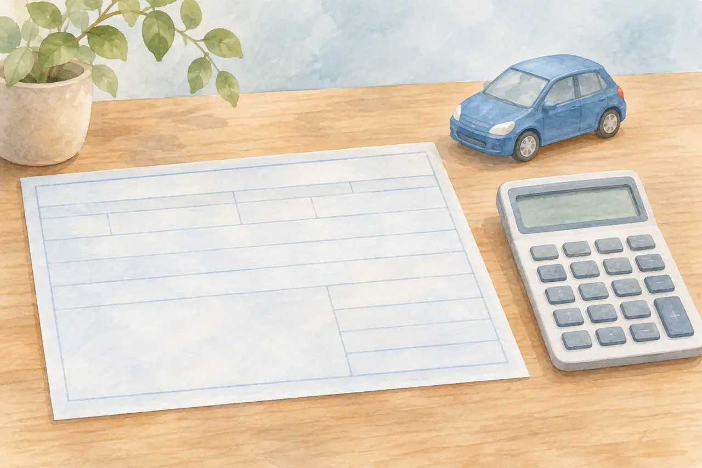
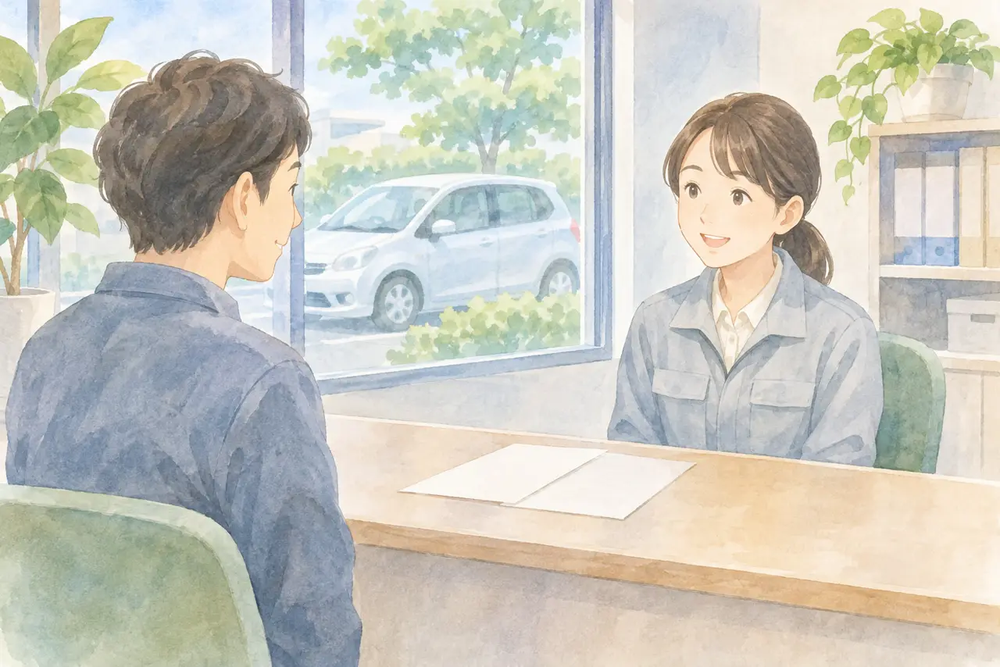

廃車のお金のこと
自動車重量税は廃車で戻る？
還付される条件と、申請のタイミング
公開
こんにちは、東京都足立区江北で自動車解体・廃車買取をしている「大崎商店 環七店」です。
「車を廃車にしたら、重量税が戻ると聞いたけれど、本当？」
「車検が残っているけれど、どうすれば戻るのか分からない」
自動車重量税は、適正に解体した車に、制度上の車検の残りが1か月以上あれば、戻ることがあります。 申請するのは、解体後に行う廃車手続きと同時です。
この記事の要点
- 戻る条件は2つです。 車を適正に解体して、永久抹消登録（または解体届出）と同時に申請すること。車検の残りが1か月以上あること。
- 申請するのは、車の最終所有者です。 廃車の手続きと同時に出します。廃車手続きが済んだあとに、還付だけを申請することは原則できません。
- 申請書を提出してから、おおむね2か月半で支払われます。 車を売って使い続ける場合は、廃車還付の対象になりません。
① 重量税が戻るのは、どんなとき？

自動車重量税は、新車のときや車検のときに納める、国の税金です。自動車税とは別の税金で、普通車にも軽自動車にもあります。
戻る条件は、次の2つです。
- 自動車リサイクル法に基づいて、車を適正に解体し、解体を事由とする永久抹消登録または解体届出と同時に、還付を申請したこと
- 計算の基準となる日で判断して、車検の残りの期間が1か月以上あること（③で説明します）
戻らないのは、次のようなときです。
- 計算の基準となる日の翌日から、車検の満了日まで1か月に満たない
- 車を売って、使い続ける（解体しない）
- 一時抹消登録だけで、解体していない
- 海外へ輸出する
- バイク（二輪車）：自動車リサイクル法の対象外です
② 戻る金額の考え方
戻る金額は、納めた重量税を、車検の期間で割り、残りの月数をかけて計算します。残りの期間のうち、1か月に満たない端数は切り捨てます。
例：2年車検で納めた重量税が24,600円。車検の残りが5か月なら、24,600円 × 5 ÷ 24 ＝ 5,125円
納めた重量税の額は、車検証の備考欄などで確認します。電子車検証は「自動車検査証記録事項」や車検証閲覧アプリも確認してください。実際の金額は、納めた額や車検の期間によって変わります。 上の金額は、計算の例です。
③ 「残りの月数」は、いつから数える？
車検の残りは、手続きの「確定日」の翌日から、車検の満了日までで数えます。車を引き取った日ではありません。
| 車の状態 | 計算の基準となる日（確定日） |
|---|---|
| 普通車・一時抹消していない | 永久抹消登録の日 |
| 普通車・一時抹消ずみ | 一時抹消登録の日と、報告受領日のうち、遅い日 |
| 軽自動車・車検証を返納していない | 解体返納で、車検証を返納した日 |
| 軽自動車・車検証を返納ずみ | 車検証の返納日と、報告受領日のうち、遅い日 |
「報告受領日」は、引取業者が使用済みの車を引き取ったという報告を、自動車リサイクル促進センター経由で国が受け取った日です。解体が終わった日とは違います。
先に一時抹消や車検証の返納をしている車は、解体届出の時点で車検の満了日を過ぎていても、上の基準日で1か月以上残っていれば、還付の対象になることがあります。
引き取りの日に車検が1か月残っていても、手続きに日数がかかるため、必ず戻るとは限りません。 車検の期限が近い場合は、早めに相談しましょう。
④ 申請のしかたと、お金を受け取るまで
- 車を引き渡す：引取業者へ、使用済みの車を引き渡します
- 解体が終わったと連絡を受ける
- 解体に伴う廃車手続きと同時に、還付を申請する：普通車は永久抹消登録または解体届出、軽自動車は解体返納または解体届出です
- 申請書の提出から、おおむね2か月半で支払われる：口座振込など、指定した方法で受け取ります
- 申請する人：リサイクルのため引取業者へ引き渡した時点の所有者（最終所有者）です。車検証の所有者と一致しない場合もあります。代理人への委任や、相続人による申請もできます。必要書類は依頼先に確認してください
- 手続きの期限：解体報告記録がなされたことを知った日から15日以内に、解体に伴う抹消・届出を行います。還付も同時に申請します
- 廃車手続きが済んだあとに、還付だけを申請することは、原則できません
⑤ 依頼先に確認すること
電話では、次のことを確認しましょう。
- 「重量税の還付金は、買取価格に含まれますか。それとも、私が受け取れますか」
- 「還付の申請は、誰が行いますか」
- 「車検が残っていますが、還付の対象になりますか」
- 「還付金が振り込まれるまで、どれくらいかかりますか」
「買取価格に含まれている」場合は、その分は、お客様に別に支払われません。 どちらになるかを、先に確認しましょう。
自動車税の還付は、3月中に廃車した方がいい理由の記事で、自賠責の返戻金は、廃車したら自賠責保険は解約できる？の記事で、紹介しています。全体の比べ方は、廃車にするとお金は戻ってくる？の記事をご覧ください。
⑥ 大崎商店の場合：重量税の還付

大崎商店では、重量税の還付金の受け取り方を、2つから選べます。
方法1：買取価格に含めて、手続きをお任せいただく
還付金の見込み額を買取価格に含めて、手続きを大崎商店が行います。車を譲渡していただき、還付の申請・受け取りの委任など、必要な手続きを進めます。買取価格に含めた分は、大崎商店が受け取る扱いになり、お客様に別に支払われません。 お支払いの前に、含まれる金額と手続きをご説明します。
方法2：ご自身で手続きして、受け取る
買取価格に含めず、ご自身で申請して、受け取る方法も選べます。書類の準備や申請の手間はかかりますが、条件を満たせば、ご自身で受け取れます。ご希望は、車の譲渡や廃車の手続きを進める前に、お知らせください。
大崎商店では、お任せいただくケースが多くなっています。まず、環七店（03-3854-4141）へお電話ください。車検の期限と、車の状態を伺い、ご案内します。
大崎商店では、
- 解体費用・手続き代行費用・印紙代は、別請求しません
- 足立区内は、引き取り無料
- 足立区外も、買取価格がつかない車は、環七店または入谷店から車で片道約30分圏内は引き取り無料（目安です）
- 買取価格がつく車は、圏外でも、所在地と車の状態によっては無料で引き取り（事前にご案内します）
- 車のお持ち込みは、どこからでも歓迎（基本は環七店。日時は、事前にお電話でご相談ください）
解体作業は、解体業の許可を受けた入谷店で行います。
ご自分の車の場合が気になったら、お気軽にご相談ください。車の状態と置き場所を伺い、ご案内します。
電話で相談する03-3854-4141よくある質問
Q. 車検が切れている車でも、重量税は戻りますか？
A. 基準となる日で車検の残りが1か月未満なら、戻りません。ただし、先に一時抹消や車検証の返納をした車は、申請時点で車検の満了日を過ぎていても、還付対象になることがあります。③の表を確認してください。
Q. 軽自動車でも、戻りますか？
A. 戻ることがあります。条件は、普通車と同じです。手続きは、軽自動車検査協会で、解体返納（または解体届出）と同時に行います。
Q. 一時抹消だけでは、戻りませんか？
A. 解体を理由にした手続きと同時に申請するため、一時抹消だけでは、重量税の還付の対象になりません。
Q. 所有者が亡くなっています。
A. 相続人が申請します。必要な書類は、亡くなった家族の車を廃車するときの手続きの記事をご覧ください。
Q. ローンが残っていて、所有者がローン会社です。
A. 所有権がローン会社などに残っている場合は、その会社が還付を受ける側になることがあります。ご自身で受け取れるとは限らないため、所有者と必要書類を確認してください。くわしくは、ローンが残っている車は廃車できる？の記事をご覧ください。
重量税の還付のご相談は、大崎商店へ
電話で相談する 03-3854-4141メールで相談する（フォーム）大崎商店 環七店
電話：03-3854-4141
〒123-0872
東京都足立区江北7丁目1−3
営業時間：月〜土 10:00〜18:00
休業日：日曜・祝日
環七沿い／舎人ライナー
西新井大師西駅
大崎商店 入谷店
電話：03-3899-2837
〒121-0836
東京都足立区入谷7丁目5−11
営業時間：月〜土 9:30〜17:30
休業日：日曜・祝日・第2土曜
重量税の還付のご相談は、環七店へ。 車検の期限と、車の状態をお伝えください。
くわしい条件と出典（読みたい方向け）
- 国税庁の案内。還付の条件・申請の流れ・計算の例・対象外の場合は、こちらで確認できます。自動車重量税の還付（タックスアンサー No.7193）／自動車重量税の廃車還付・手続案内
- 確定日と報告受領日：③の表と残り月数の考え方は、国税庁・廃車還付制度の概要（PDF、2〜3ページ）で確認できます。個別の日付や金額は、依頼先に確認してください。
- 申請者・受取先・提出時期：国税庁・廃車還付Q&A（Q1〜Q9、Q17〜Q20）をご覧ください。最終所有者本人の申請と、代理申請・代理受領は区別します。
- この記事の対象：通常の廃車還付を説明しています。自然災害で被害を受けた車には、別の還付制度があります。
- 引き取りの条件：積載車は1台で、複数の引き取りを同時には行っていません。すぐに伺えるかは、そのときの仕事の状況によります。引き取りの範囲は、出張引き取りの対応エリアの記事をご覧ください。
※掲載画像はAIで生成したイラストです。実際の店舗・人物・車両とは異なります。